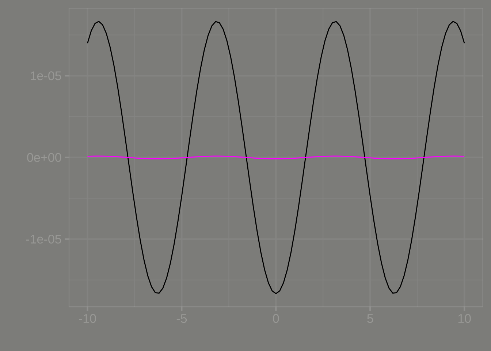
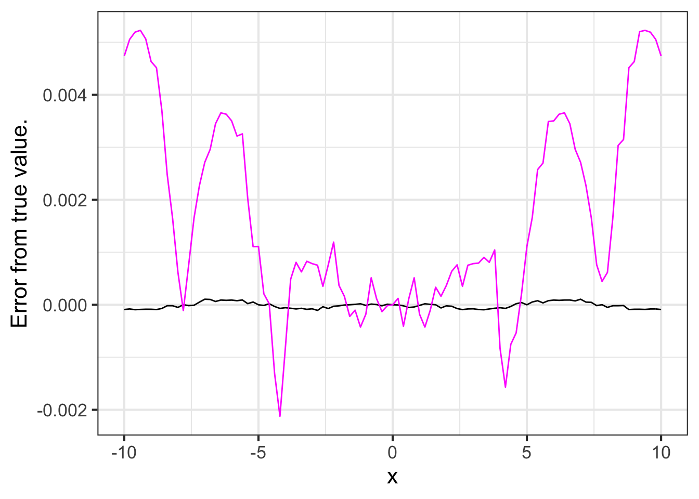
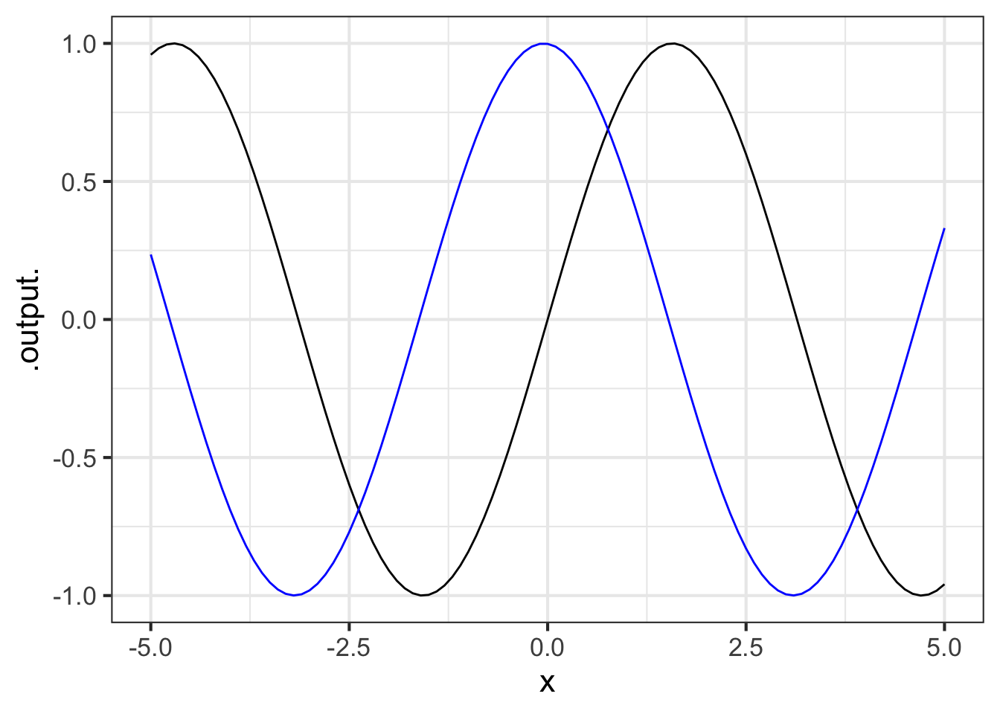
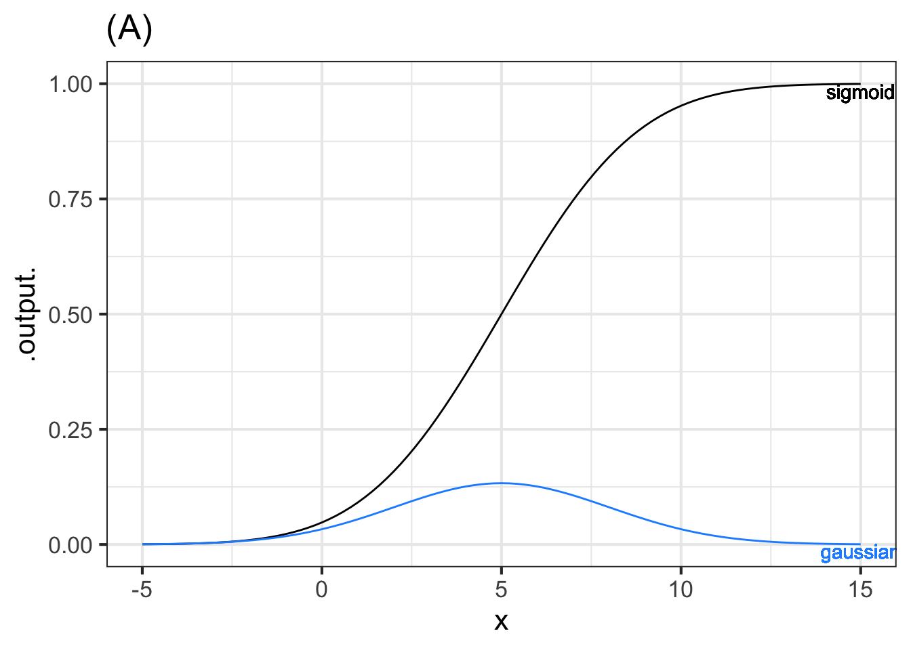
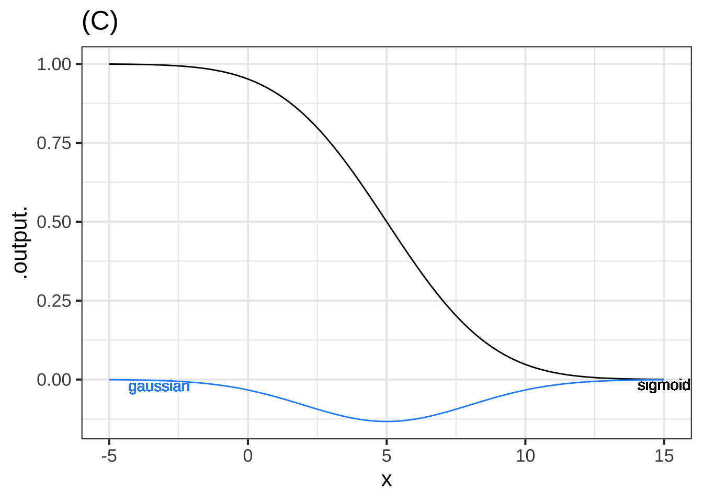

20 Constructing derivatives
This chapter showshow to use the computer to construct the derivative of any function. This is easy because the task of constructing derivatives is well suited to the computer.
We will demonstrate two methods:
Symbolic differentiation, which transforms an algebraic formula for a function into a corresponding algebraic formula for the derivative.
Finite-difference methods that use a “small”—but not evanescent—\(h\).
Chapter Chapter 23 covers the algorithms used by the computer to construct symbolic derivatives. One reason for teaching you to do with paper and pencil the simpler sorts of problems that the computer does perfectly is analogous to why you learned basic arithmetic by hand even though a calculator can perform the task more reliably. Another reason to learn to carry out symbolic differentiation on your own is to enable you to follow textbook or classroom demonstrations of formulas which often come from solve a differentiation problem.
20.1 Why differentiate?
Before showing the easy computer-based methods for constructing the derivative of a function, it is good to provide some motivation: Why is differentiation so frequently in so many fields of study and application?
A primary reason lies in the laws of physics. Newton’s Second Law of Motion reads:
“The change of motion of an object is proportional to the force impressed; and is made in the direction of the straight line in which the force is impressed.”
Newton defined used position \(x(t)\) as the basis for velocity \(v(t) = \partial_t x(t)\). “Change in motion,” which we call “acceleration,” is in turn the derivative \(\partial v(t)\). Derivatives are also central to the expression of more modern forms of physics such as quantum theory and general relativity.
Many relationships encountered in the everyday or technical worlds are more understandable if framed in terms of derivatives. For instance,
- Electrical power is the rate of change with respect to time of electrical energy.
- Birth rate is one component of the rate of change with respect to time of population. (The others are the death rate and the rates immigration and emigration.)
- Interest, as in bank interest or credit card interest, is the rate of change with respect to time of assets.
- Inflation is the rate of change with respect to time of prices.
- Disease incidence is one component of the rate of change with respect to time of disease prevalence. (The other components are death or recovery from disease.)
- Force is the rate of change with respect to position of energy.
- Deficit (as in spending deficits) is the change with respect to time of debt.
Often, we know one member in such function-and-derivative pairs, but to need to calculate the other. Many modeling situations call for putting together different components of change to reveal how some other quantity of interest will change. For example, modeling the financial viability of retirement programs such as the US Social Security involves looking at the changing age structure of the population, the returns on investment, the changing cost of living, and so on. In Block V, we will use derivatives explicitly to construct models of systems, such as an outbreak of disease, with many changing parts.
Derivatives also play an important role in design. They play an important role in the construction and representation of smooth curves, such as a robot’s track or the body of a car. (See Chapter Chapter 48.) Control systems that work to stabilize a airplane’s flight or regulate the speed and spacing of cars are based on derivatives. The notion of “stability” itself is defined in terms of derivatives. (See Chapter Chapter 44.) Algorithms for optimizing design choices also often make use of derivatives. (See Chapter Chapter 49.)
Economics as a field makes considerable use of concepts of calculus—particularly first and second derivatives, the subjects of this Block—although the names used are peculiar to economics, for instance, “elasticity”, “marginal returns” and “diminishing marginal returns.”
The origins of modern economics, especially the theory of the free market, are attributed to a book published in 1776, The Wealth of Nations. The author, Adam Smith (1723-1790), lays out dozens of relationships between different quantities — wages, labor, stock, interest, prices, profits, and coinage among others. Yet despite the invention of calculus a century before Wealth of Nations, the book uses no calculus.
Consider this characteristic statement in Wealth of Nations:
The market price of every particular commodity is regulated by the proportion between the quantity which is brought to market, and the demand of those who are willing to pay the natural price of the commodity.
Without calculus and the ideas of functions and their derivatives, Smith was not able to think about prices in a modern way where price is shaped by demand and supply. Instead, for Smith, each item has a “natural price”: a fixed quantity that depends on the amount of labor used to produce the item. Nowadays, we understand that productivity changes as new methods of production and new inventions are introduced. But Smith lived near the end of a centuries-long period of static economies. Transportation, agriculture, manufacture, and population size were all much as they had been for the past 500 years or longer. James Watt’s steam engine was introduced only in 1776 and it would be decades before being adapted to the myriad uses of steam power characteristic of the 19th century. The cotton gin (1793), labor-saving agricultural machines such as the McCormick reaper (1831), the assembly line (1901), and the many other innovations of industry all lay in the future when Smith was writing Wealth of Nations.

It took the industrial revolution and nearly a century of intellectual development before economics had to and could embrace the rapid changes in the production process. In this dynamical view, supply and demand are not mere quantities, but functions of which price is the primary input. The tradition in economics is to use the word “curve” instead of “function,” giving us the phrases “supply curve” and “demand curve.” Making the transition from quantity to function, that is, between a single amount and a relationship between amounts, is a core challenge to those learning economics.
20.2 Symbolic differentiation
The R/mosaic function D() takes a formula for a function and produces the derivative. It uses the same sort of tilde expression used by makeFun() or contour_plot() or the other R/mosaic tools. For instance,
D(t * sin(t) ~ t)
## function (t)
## sin(t) + t * cos(t)If you prefer, you can use makeFun() to define a function, then hand that function to D() for differentiation.
myf <- makeFun(sqrt(y * pnorm(1 + x^2, mean=2, sd=3)) ~ x & y)
dx_myf <- D(myf(x, y) ~ x, y=3)
dx_myf
## function (x, y = 3)
## {
## .e1 <- 1 + x^2
## x * y * dnorm(.e1, 2, 3)/sqrt(y * pnorm(.e1, mean = 2, sd = 3))
## }In the right side of the tilde expression handed off to D() names the with-respect-to input. This is similar to the tilde expressions used in plotting, which name the inputs that form the graphics domain. But it contrasts with the tilde expressions in makeFun(), where the right-hand side specifies the order in which you want the inputs to appear.
Needless to say, D() knows the rules for the derivatives of the pattern-book functions introduced in Section 19.3. For instance,
D(sin(t) ~ t)
## function (t)
## cos(t)
D(log(x) ~ x)
## function (x)
## 1/x
D(exp(x) ~ x)
## function (x)
## exp(x)
D(x^2 ~ x)
## function (x)
## 2 * x20.3 Finite-difference derivatives
Whenever you have a formula amenable to the construction of a symbolic derivative, that is what you should use. Finite-difference derivatives are useful in those situation where you don’t have such a formula. The calculation is simple but has a weakness that points out the advantages of the evanescent-\(h\) approach.
For a function \(f(x)\) and a “small,” non-zero number \(h\), the finite-difference approximates the derivative with this formula:
\[\partial_x f(x) \approx \frac{f(x+h) - f(x-h)}{2h}\ .\]
To demonstrate, let’s construct the finite-difference approximation to \(\partial_x \sin(x)\). Since we already know the symbolic derivative—it is \(\partial_x \sin(x) = \cos(x)\)—there is no genuinely practical purpose for this demonstration. Still, it can serve to confirm the symbolic rule.
We will call the finite-difference approximation fq_sin() and use makeFun() to construct it:
fq_sin <- makeFun((sin(x+h)- sin(x-h))/(2*h) ~ x, h=0.01)Notice that fq_sin() has a parameter, h whose default value is being set to 0.01. Whether 0.01 is “small” or not depends on the context. Operationally, we define “small” to be a value that gives practically the same result even if it is made smaller by a factor of 2 or 10.
As a demonstration that fq_sin() with \(h=0.01\) approximates the genuine \(\partial_x \sin(x)\), we exploit our knowledge that \(\partial_x \sin(x) = \cos(x)\). Figure 20.1 plots out the difference between the the \(h=0.01\) approximation and the genuine derivative.
slice_plot(fq_sin(x, h=0.01) - cos(x) ~ x, bounds(x=-10:10)) %>%
slice_plot(fq_sin(x, h=0.001) - cos(x) ~ x, color="magenta") %>%
gf_labs(y="Error from true value.")
fq_sin() to \(\partial_x \sin(x)\) for two values of \(h\).You will need to look carefully at the vertical axis scale in Figure 20.1 to see what’s happening. For \(h=0.01\), fq_sin() is not exactly the same as cos(), but it is close, always being within $$0.00017. For many purposes, this would be accurate enough. But not for all purposes. We can make the approximation better by using a smaller \(h\). For instance, the \(h=0.001\) version of fq_sin() is accurate to within $$0.0000017.
In practical use, one employs the finite-difference method in those cases where one does not already know the exact derivative function. This would be the case, for example, if the function is a sound wave recorded in the form of an MP3 audio file.
In such situations, a practical way to determine what is a small \(h\) is to pick one based on your understanding of the situation. For example, much of what we perceive of sound involves mixtures of sinusoids with periods longer than one-two-thousandth of a second, so you might start with \(h\) of 0.002 seconds. Use this guess about \(h\) to construct a candidate finite-difference approximation. Then, construct another candidate using a smaller h, say, 0.0002 seconds. If the two candidates are a close match to one another, then you have confirmed that your choice of \(h\) is adequate.
It is tempting to think that the approximation gets better and better as h is made even smaller. But that is not necessarily true for computer calculations. The reason is that quantities on the computer have only a limited precision: about 15 digits. To illustrate, let’s calculate a simple quantity, \((\sqrt{3})^2 - 3\). Mathematically, this quantity is exactly zero. On the computer, however it is not quite zero:
sqrt(3)^2 - 3
## [1] -4.440892e-16We can see this loss of precision at work if we make h very small in the finite-difference approximation to \(\partial_x \sin(x)\). In Figure 20.2 we are using h = 0.000000000001. The result is unsatisfactory.
slice_plot( fq_sin(x, h=0.000000000001) - cos(x) ~ x,
bounds(x=-10:10)) %>%
slice_plot(fq_sin(x, h=0.0000000000001) - cos(x) ~ x,
color="magenta") %>%
gf_labs(y="Error from true value.")
h leads to a loss of accuracy in the finite-difference approximation.20.4 Second and higher-order derivatives
Many applications call for differentiating a derivative or even differentiating the derivative of a derivative. In English, such phrases are hard to read. They are much simpler using mathematical notation.
- \(f(x)\) a function
- \(\partial_x f(x)\) the derivative of \(f(x)\)
- \(\partial_x \partial_x f(x)\), the second derivative of \(f(x)\), usually written even more concisely as \(\partial_{xx}f f(x)\).
There are third-order derivatives, fourth-order, and on up, although they are not often used.
To compute a second-order derivative \(\partial_{xx} f(x)\), first differentiate \(f(x)\) to produce \(\partial_x f(x)\). Then, still using the techniques described earlier in this chapter, differentiate \(\partial_x f(x)\).
There is a shortcut for constructing high-order derivatives using D() in a single step. On the right-hand side of the tilde expression, list the with-respect-to name repeatedly. For instance:
- The second derivative \(\partial_{xx} \sin(x)\):
D(sin(x) ~ x & x)
## function (x)
## -sin(x)- The third derivative \(\partial_{xxx} \ln(x)\):
D(log(x) ~ x & x & x)
## function (x)
## 2/x^3Physics students learn a formula for the position of an object in free fall dropped from a height \(x_0\) and at an initial velocity \(v_0\):
\[ x(t) \equiv -\frac{1}{2} g t^2 + v_0 t + x_0\ .\]
The acceleration of the object is the second derivative \(\partial_{tt} x(t)\). Use D() to find the object’s acceleration.
The second derivative of \(x(t)\) with respect to \(t\) is:
D(0.5*g*t^2 + v0*t + x0 ~ t & t)
## function (t, g, v0, x0)
## gThe acceleration does not depend on \(t\); it is the constant \(g\). No wonder \(g\) is called “gravitational acceleration.”
20.5 Drill
20.6 Exercises
Exercise 20.01
The most common programming pattern in the R/mosaic calculus commands is:
Operator(tilde_expression, [optional details])
Some operators: slice_plot(), contour_plot, make_Fun(), D(), antiD(), Zeros()
For each of the R/mosaic expressions, determine which kind of thing is being created. Feel free to run the expressions in a SANDBOX.
Part A
makeFun(a*x - b ~ x)
- a function of
x - a function of
x,a, andb - a tilde expression
- a plot
- a data frame
- an error
Part B
D(a*x - b ~ x)
- a function of
a - a function of
x,a, andb - a tilde expression
- a plot
- a data frame
- an error
Part C
antiD(a*x - b ~ x)
- a function of
a - a function of
x,a, andb - a tilde expression
- a plot
- a data frame
- an error
Part D
slice_plot(a*x - b ~ x, bounds(x=0:5))
- a function of
x - a function of
x,a, andb - a tilde expression
- a plot
- a data frame
- an error
Part E
f <- makeFun(a*x + b ~ x, a=2, b=-4)
slice_plot(f(x) ~ x, bounds(x=0:5))
- a function of
x - a function of
x,a, andb - a tilde expression
- a plot
- a data frame
- an error
Part F
Zeros(a*x - b ~ x, bounds(x=0:5))
- a function of
x - a function of
x,a, andb - a tilde expression
- a plot
- a data frame
- an error
Part G
a*x - b ~ x
- a function of
x - a function of
x,a, andb - a tilde expression
- a plot
- a data frame
- an error
Part H
f <- makeFun(a*x + b ~ x, a=2, b=-4)
Zeros(f(x) ~ x)
- a function of
x - a function of
x,a, andb - a tilde expression
- a plot
- a data frame
- an error
Part I Suppose you create a function in the usual way, e.g. f <- makeFun(a*x + b ~ x, a=2, b=-4). Which of the following will plot a straight-line function with a slope of 5.
slice_plot(f(x) ~ x, bounds(x=-5:5))slice_plot(f(x, b=2), bounds(x=-5:5)slice_plot(f(x, a=5), bounds(x=-5:5)
Exercise 20.02
As you know, given a function \(g(x)\) it is easy to construct a new function \({\cal D}_x g(x)\) that will be an approximation to the derivative \(\partial_x g(x)\). The approximation function, which we call the slope function, can be \[{\cal D}_x g(x) \equiv \frac{g(x + 0.1) - g(x)}{0.1}\]
Open a SANDBOX and use makeFun() to create a function \(g(x) \equiv \sin(x)\) and another that will be the slope function, called it slope_of_g().
g <- makeFun(sin(x) ~ x)
slope_of_g <- makeFun( _your_tilde_expression_here )Part A What’s the value of slope_of_g(1)?
0.3749 0.4973 1.3749 1.4973
Using your sandbox, plot both g() and slope_of_g() (in blue) on a domain \(-5 \leq x \leq 5\). This can be done with slicePlot() in the following way:
slice_plot(g(x) ~ x, bounds(x=-5:5)) %>%
slice_plot(slope_of_g(x) ~ x, color="blue")
Part B Which of these statements best describes the graph of \(g()\) compared to slope_of_g()?
slope_of_g()is shifted left by about \(\pi/2\) compared tog(x).slope_of_g()is shifted left by about \(\pi\) compared tog(x).slope_of_g()has a larger amplitude thang()- The output of
slope_of_g()is always positive slope_of_g()is practically the same function asg(). That is, for any input the output of the two functions is practically the same.
Exercise 20.03
Gaussian functions and sigmoid functions come in pairs. For every possible sigmoid, there is a corresponding gaussian that gives, for each value of the input, the slope of the sigmoid.
Each of the following graphs shows a sigmoid and a gaussian function. The two might or might not correspond to one another. That is, the output of the gaussian might be the slope of the sigmoid, or the gaussian might correspond to some other sigmoid. Remember, you’re comparing the output of the gaussian to the slope of the sigmoid.
For each graph, say whether the gaussian and the sigmoid correspond to one another. Is so, choose correspond. If not, choose one of these reasons why not:
- center: The peak of the gaussian does not occur at the same value of \(x\) at which the sigmoid is steepest.
- amplitude: The numerical value of the output of the gaussian function is, for all \(x\), much larger than the numerical value of the slope of the sigmoid.

Part A Graph (A)
correspond center amplitude

Part B Graph (B)
- correspond
- center
- The numerical value of the output of the gaussian function is much larger than the numerical value of the slope of the sigmoid.
Part C Graph (C)
correspond center amplitude
Problem with Differentiation Exercises/boy-hide-gloves.Rmd”
Problem with Differentiation Exercises/sigmoid-bath.Rmd
Exercise 20.06
Recall the differentiation rules for three of the pattern-book functions as presented in Chapter ?sec-symbolic-differentiation:
| Function name | Formula | Formula for derivative | power-law exponent \(p\) |
|---|---|---|---|
| Identity | \(x\) | \(1\) | 1 |
| Square | \(x^2\) | \(2\, x\) | 2 |
| Reciprocal | \(1/x\) | \(-1/x^2\) | -1 |
All three of these pattern-book functions are members of the power-law family: \(x^p\). They differ only in the value of \(p\).
There is a differentiation rule for the power-law family generally. The next question offers several formulas for this rule, only one of which is correct. You can figure out which one by trying the pattern-book functions in the table above and seeing which formula gives the correct answer for the derivative.
Part A Which of these formulas gives the correct differentiation rule for the power-law family \(x^p\)?
\(p x^{p-1}\) \((p-1) x^{p+1}\) \(x^{p-1}\) \((p-1) x^{p-1}\)
Exercise 20.07
Although we created an R function named slopeFun() for the purposes of demonstration, it is better to use the R/mosaic operator D() which calculates the derivative, sometimes using symbolic methods and sometimes using a finite-difference method.
As an example of the use of D(), here is some more R code that defines a function f() and finds \(\partial_x f()\), calling it d_f(). Then a slice plot is made of both f() and d_f().
f <- makeFun(sqrt(exp(x)) - x^2 ~ x)
d_f <- D(f(x) ~ x)
slice_plot(f(x) ~ x, bounds(x=c(0, 5))) %>%
slice_plot(d_f(x) ~ x, color = "orange3")
:::
For each of the following functions, write a brief comparison of the function to it is differenced version. You can combine phrases such as “same shape”, “different shape. larger in amplitude”, “smaller in amplitude”, “same period”, “shorter period”, “longer period”, or whatever seems appropriate. For instance, for the original example in the sandbox, a reasonable comparison might be, “f() is concave down but Diff(f) is concave up.”
A. For the function \(f(x) \equiv 3 x\), compare \(f()\) to \(\partial_x f\).
B. For the function \(f(x) \equiv x^2\), compare \(f()\) to \(\partial_x f\).
C. For the function \(f(x) \equiv e^x\), compare \(f()\) to \(\partial_x f\).
D. For the function \(f(x) \equiv e^{-0.3 x}\), compare \(f()\) to \(\partial_x f\).
E. For the function \(f(x) \equiv \sin(x)\), compare \(f()\) to \(\partial_x f\).
F. For the function \(f(x) \equiv \sin(2 \pi x)\), compare \(f()\) to \(\partial_x f\)).
G. For the function \(f(x) \equiv \sin(\frac{2 \pi}{20} x)\), compare \(f()\) to \(\partial_x f\)).